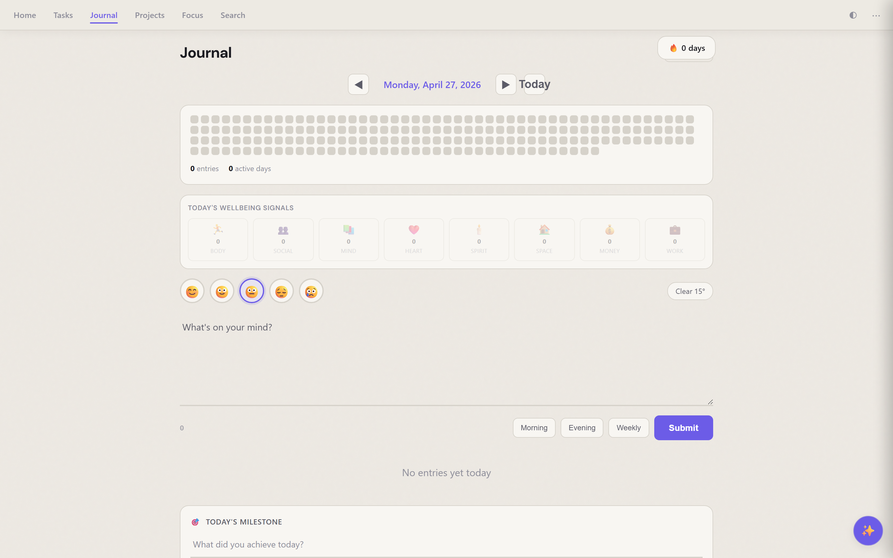
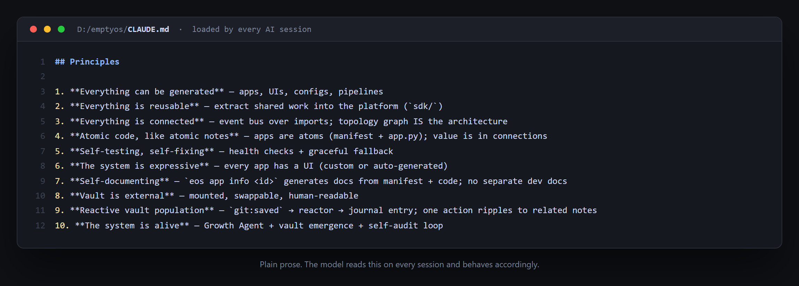
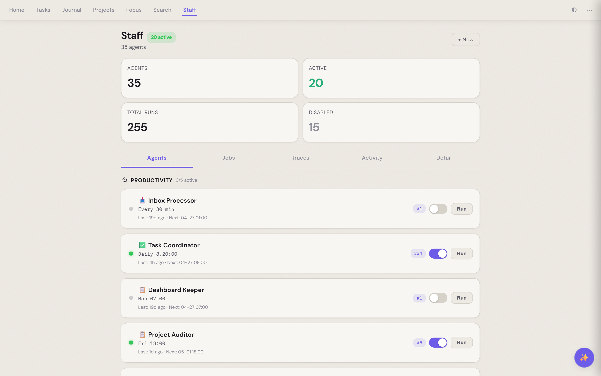

Notes as Infrastructure: the emergence of the markdown OS
Last week I added one line to a note about how I review pull requests. The next morning, my AI assistant reviewed a PR using exactly that line — without me telling it to.
The note didn't change. My behaviour did. So did the AI's.
In systems design we usually draw a hard line between data (state) and logic (behaviour). That small moment is what convinced me the line is collapsing. Treated as an AI substrate, a markdown vault evolves through three functional layers, and at each one the same humble .md file moves from noun → verb. Is → should → does.
Most people stop at layer one and miss the rest of the story.
1. The Knowledge Layer — ground truth¶

At this level, the vault is the authoritative context for the model. Instead of leaning on the median opinion of its training data, the AI is grounded in specific, dated, personal facts.
When I ask my system "how did the latest job interview go?" it doesn't guess. It opens the daily journal from that date, reads what I actually wrote, and replies with my own words sharpened back at me. When I ask "what's my net worth trend over the last three months?" it pulls the monthly snapshots I'd typed by hand and gives me the slope.
The shift is in how I write. Writing stops being archiving for a future me and becomes contextualising for an agent. A precise note becomes a precise system memory; a vague note produces a vague output. Every vague sentence is a vague answer waiting to happen.
2. The Policy Layer — behavioural constraints¶

This is where prose becomes active skill.
In EmptyOS I keep a note that says, roughly: "When proposing a code change, name the file and line number, propose the smallest diff that solves the problem, and never invent a function that doesn't already exist in the repo." Three sentences. They sit in a folder the system reads at every session start.
Because the model parses these notes as part of its system context, the prose functions as declarative policy. Before that note existed, the AI would happily suggest plausible-looking helpers from libraries I don't use. After it existed, it stopped — not because the model got smarter, but because it now has my standards to point to.
This is the layer that surprises people. Every "how I do X" note is now a skill waiting to be invoked. The vault isn't documentation any more; it's the governing logic of the assistant's behaviour. The same prose serves both you and the machine, with no extra format. You write the rule once; you both follow it.
3. The Infrastructure Layer — executable tools¶

The final transition happens when notes contain executable steps the AI can run. The line between doc and program disappears.
A note titled "how I export my expenses" stops describing the process and starts being the process. The AI reads the English intent, identifies the computational steps inside the note, and executes them. A recipe becomes a runnable. A checklist becomes a pipeline.
In EmptyOS this shows up as a folder of small skills — each a markdown file that explains, in prose, what it does and when to invoke it. I author them by writing English first and code second; the prose is the interface. The vault becomes the runtime environment.
The vault is no longer just what you know. It's what you can do.
The progression nobody names¶
Knowledge (is) → Policy (should) → Infrastructure (does).
Most people stop at layer one and miss the real story: the vault is becoming an operating system. Not metaphorically. Literally — a place where information, policy, and action all live in the same plain-text substrate, where the same .md file can be read by you, by the AI, and by a runtime, with no translation layer in between.
That's the part that's hard to see from the outside. From the outside it still looks like a folder of notes.
The prerequisite — note hygiene as technical debt¶
The progression from noun to verb is only as reliable as the substrate underneath it. Sloppy notes → sloppy policies → sloppy tools. The AI amplifies whatever's there; if your vault is a junk drawer, AI gives you a very fast, very confident junk drawer that occasionally hands you the wrong knife.
To treat a vault as infrastructure, three engineering disciplines apply:
- Atomicity — one concept or process per note.
- Schema — consistent frontmatter and metadata so the system can find things.
- Integrity — regular pruning of outdated or conflicting policies.
The new digital literacy isn't found in clever prompting. It's in the disciplined management of the information substrate.
See it running¶
I've been exploring these ideas through EmptyOS — a mind companion that thinks and creates with you, not for you — a system designed to treat a markdown vault as a unified operating substrate. The project home, more writing, and the docs live at eos.binbian.net.
There's a live instance at demo.binbian.net. Browse the apps, open a journal entry, see a policy note become behaviour, watch the Staff agents treat the vault as infrastructure. It's the fastest way to feel what "vault as OS" is like without installing anything.
A caveat: the cloud demo is deliberately partial. EmptyOS is built local-first and private-first — it's meant to be a safe personal tool, so the parts that touch real keys, real data, or your own machine only light up when you self-host. The demo shows the shape; running it on your own vault shows the point.
I'd be interested to hear from others working at the intersection of PKM and LLMs — are you seeing the same shift toward executable knowledge?
If this resonates, the next post in the series is on the harness — why the same model behaves like two different products depending on what you wrap around it.
Listen to this post¶
⬇ Download as video — share on LinkedIn, X, etc.
AI-generated podcast discussion of this article